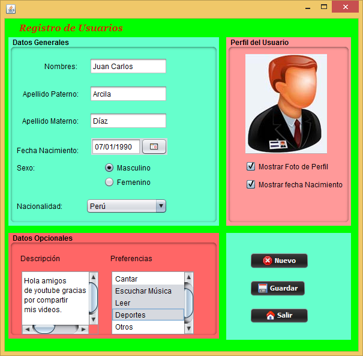

<!-- <div class="row">
    <h1>Proyectos realizados</h1>
        <div class="contenedor">
            <div class="col-sm-12 col-md-7 col-lg-7 parte1">
                <h1>Registro de usuarios en Java</h1>
                <p>Este trabajo fué realizado con alumnos de 6to año de la EETP Nº 275 "Alte Guillermo Brown" 
                   Alcorta - Santa Fe. Es un trabajo realizado en la institución como cierre de un proyecto
                   iniciado un año antes con el estudio de la programación orientada a objetos. A través del 
                   mismo, los alumnos dieron cuenta de los conocimientos adquiridos y puestos en práctica lo que
                   les permitió poder aprobar el espacio "Practicas Profesionalizantes".
                </p>
            </div>
            <div class="col-sm-12 col-md-3 col-lg-3 offset-md-1 offset-lg-1 parte2">
                
            </div>
        </div>
</div> -->